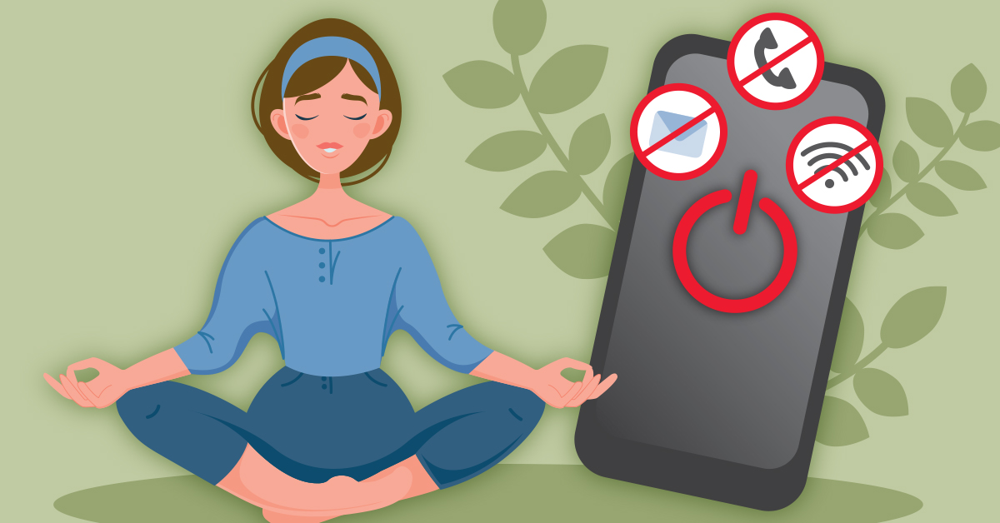

I did something stupid last month. I decided to do a digital detox at the same time as a seven‑day fast. I thought it would be cleansing. I thought it would reset my brain and my metabolism at the same time. I thought I was going to come out the other side as a new person. What actually happened was I spent the first three days feeling like a caged animal with nothing to do but stare at the wall.
The idea came from a podcast, obviously. Some biohacker type was talking about the benefits of removing both food and screens from your life for a week. He said it forced your brain to find new ways to get dopamine. He said it was life‑changing. He didn’t mention that it also forces you to sit with your own thoughts for hours on end, which is not always a good thing.
I set some ground rules. No social media. No streaming. No aimless scrolling. I could still use my phone for calls and texts, and I could use my laptop for work, but only during specific hours. No checking anything after 7 PM. The fasting was my usual 18‑hour eating-window-planner, but I extended it to 20 hours on a couple of days just to see what would happen. I was committed. I was also completely unprepared.
Day one was surprisingly easy. I was busy with work, so I didn’t have time to scroll anyway. I ate my first meal at 2 PM, felt fine, and went to bed early. I thought this was going to be a breeze. I was wrong.
Day two was when the withdrawal hit. I kept reaching for my phone out of habit. I would pick it up, unlock it, and then realize there was nothing to check. My brain was so used to the dopamine hit of a new notification that the absence of it felt physically uncomfortable. I was restless, irritable, and hungry. Not for food, exactly. For distraction. I wanted something to look at, something to read, something to make me feel like I wasn’t alone with my thoughts.
Day three was the worst. I woke up with a headache that I’m pretty sure was a mix of caffeine withdrawal and screen withdrawal. I hadn’t cut out coffee, but I had cut out the mindless scrolling that usually accompanied my morning cup. I drank my coffee and just sat there. Staring. I had nothing to do with my hands. My brain was screaming for stimulation. My stomach was also screaming, because it was hour 16 of my fast. I spent the entire morning pacing around my apartment like a caged animal.
By day four, something shifted. I’m not sure if it was the fasting or the lack of screens, but the anxiety that had been building started to quiet down. I wasn’t as restless. I could sit still without feeling like I was missing something. I read a book for the first time in months. Not a digital book. A real one with paper pages. I finished it in two days. That hadn’t happened since college.
Day five was the turning point. I started noticing things I had been ignoring. The way the light hit the floor in the morning. The sound of my neighbor practicing piano. The fact that I had a lot of thoughts in my head that I never gave space to because I was always busy consuming. I wrote some of them down. I didn’t know I was a person who journaled. Turns out I am.
By day six, I was in a groove. My eating eating-window-planner was from 1 PM to 6 PM. I wasn’t hungry in the mornings anymore. My energy was steady. My screen time had dropped from an embarrassing average of four hours a day to about an hour. I felt less anxious. I felt more present. I felt like my brain had been power‑washed.
Day seven was bittersweet. I had made it. I had done the full week. I was proud of myself, but I was also nervous about going back to normal life. I knew I couldn’t keep the same level of restriction forever, but I didn’t want to lose the benefits either.
I ended the week with a meal that felt like a celebration. A big bowl of vegetables, some chicken, and a glass of sparkling water. No alcohol, because that would have defeated the point. I ate slowly and enjoyed every bite. I noticed the flavors in a way I hadn’t in years.
The screen time tracking was the most shocking part. I had no idea I was spending that much time on my phone. Four hours a day. That’s a full workday of mindless scrolling every week. I was losing an entire day of my life to endless feeds and short videos. Cutting that out made me realize how much time I actually have. Time that I used to fill with distractions is now time for reading, thinking, walking, and noticing.
The fasting part was harder than I expected. I had done 18‑hour fasts before, so I thought 20 hours wouldn’t be that different. I was wrong. Those extra two hours were brutal. My energy dipped around 11 AM and didn’t pick up until I ate. I realized that my sweet spot is 16‑18 hours. Anything beyond that is pushing it. I’m not one of those people who can fast for 24 hours and feel great. That’s fine. I’m not trying to be a superhero.
The combination of fasting and digital detox was more than the sum of its parts. Together, they created a level of clarity that I hadn’t experienced before. Without food to digest, my body had more energy. Without screens to scroll, my brain had more capacity. The silence felt uncomfortable at first, but then it became something else. A pause. A reset. I needed it more than I realized.
I track my screen time and my fasting windows using the FastingTool’s Session Tracker. It’s not designed for screen time, but I add a note.
📱 Session Tracker Log your fasting windows and note your screen time. See if there’s a correlation. All data stays in your browser — we never see it. The Trend Charts help me see if my anxiety improves when both fasting and screen time are low.
📉 Trend Charts Overlay your fasting consistency and screen time. The patterns are revealing. All data stays in your browser — we never see it. And the Window Planner helps me schedule my fasting windows around the days when I know I’ll need more focus.
📅 Window Planner Plan your fasting windows to align with deep work days. Less distraction, more presence. All data stays in your browser — we never see it. I’m not going to pretend I’ve completely changed my habits. I still scroll sometimes. I still snack sometimes. But I’m more mindful about both. I know what happens when I don’t give my brain space to breathe. I know what happens when I use food as a distraction instead of fuel.
The 7‑day experiment reminded me that my brain needs rest. Not just sleep, but rest from input. And my body needs rest from food. The combination is powerful. It’s also uncomfortable. But the discomfort is worth it.
If you’re thinking about trying a digital detox, don’t do it at the same time as a long fast. Start with one. See how it feels. Then add the other. I jumped in headfirst because I’m impatient. It worked, but it was harder than it needed to be.
My screen time is still lower than it was before. My fasting is more consistent. My anxiety is quieter. That’s the benefit of a reset. It doesn’t fix everything. But it gives you a new starting point.
— Maya
P.S. I still haven’t watched any of the shows my friends keep recommending. I’m not sure I want to go back. There’s something nice about not being caught up on everything.